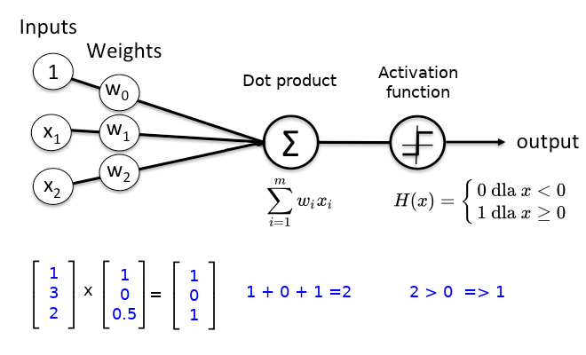

Your browser doesn't support the features required by impress.js, so you are presented with a simplified version of this presentation.
For the best experience please use the latest Chrome, Safari or Firefox browser.
Wstęp do sieci neuronowych
w rolach głównych:
PERCEPTRON
Przedstawia: Rafał Margużewicz
Sponsor:

The perceptron is an algorithm
for supervised learning of
binary classifiers.
Perceptron - Biologia

Perceptron - model matematyczny
 x
x - wektor danych wejściowych (input)
w - wektor reprezentujący wagi
b - bias
w * x jest iloczynem skalarnym (eng. dot product) i można go zapisać w formie

Perceptron - diagram

class Perceptron(object):
def __init__(self, eta = 0.01, epochs = 50):
self.eta = eta # learning reate
self.epochs = epochs
def train(self, X, target): # Perceptron Rule
self.w = np.zeros(1 + X.shape[1])
self.err = []
print('Training progress..')
for epoch in range(self.epochs):
errors = 0
for x, y in zip(X, target):
update = self.eta * (y - self.predict(x))
self.w[1:] += update * x
self.w[0] += update
errors += int(update != 0.0)
return self
def dot_product(self, X):
return np.dot(X, self.w[1:]) + self.w[0]
def predict(self, X):
return np.where(self.dot_product(X) >= 0.0, 1, 0)
Pytania?
Gdzie jest wiedza tego modelu ?
Jak zapisać wiedzę tego modelu ?
Jak można zapisać ten model ?
Czy perceptron nadaje się do danych nie seperowalnych liniowo [eng. linearly separable]?